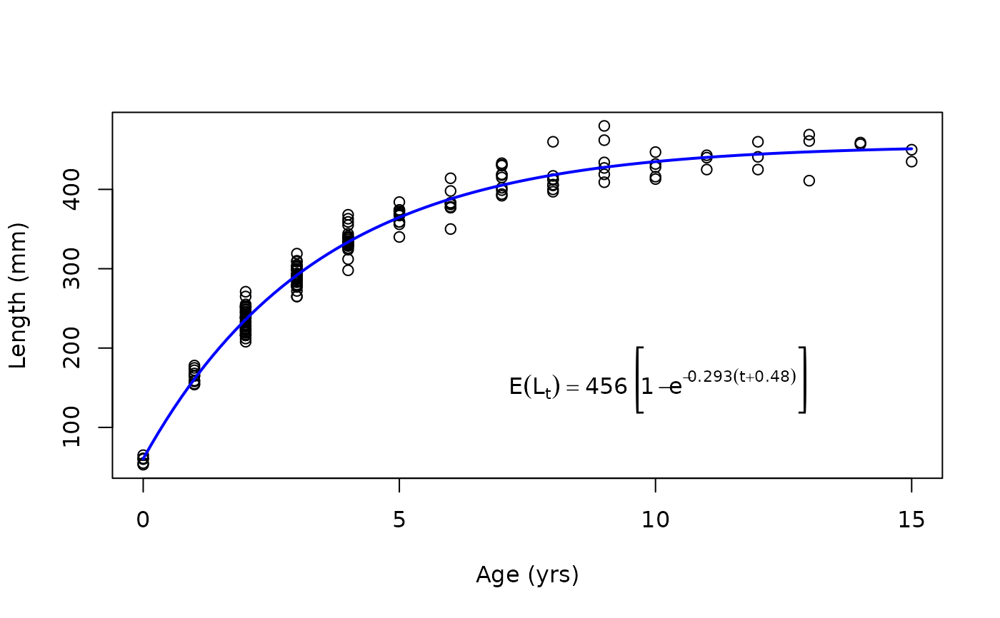
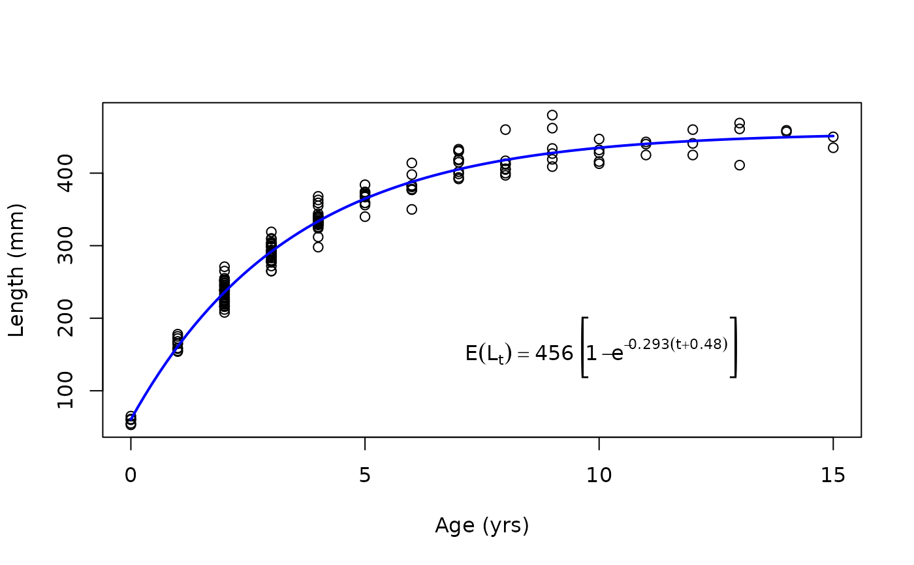

Creates a string or an expression for a specific growth function.
Source:R/showGrowthFun.R
showGrowthFun.RdCreates a string or expression for a specific parameterization of the von Bertalanffy, Gompertz, Richards, logistic growth functions, as well as the Schnute and Schnute-Richards growth functions. Parameters may be replaced with values from a model fit. The string or expression can be added to plots as titles, annotations, etc. The string/expression can also be plotted to a blank plot with plot=TRUE to see the equation of the growth function.
Usage
showGrowthFun(
type = c("von Bertalanffy", "Gompertz", "Richards", "logistic", "Schnute",
"Schnute-Richards"),
param = 1,
pname = NULL,
case = NULL,
constvals = NULL,
parse = FALSE,
yvar = NULL,
xvar = NULL,
fit = NULL,
digits = NULL,
stackWhere = FALSE,
plot = FALSE,
...
)Arguments
- type
A single string (i.e., one of “von Bertalanffy”, “Gompertz”, “logistic”, “Richards”, “Schnute”, “Schnute-Richards”) that indicates the type of growth function to show.
- param
A single numeric that indicates the specific parameterization of the growth function. Will be ignored if
pnameis non-NULL. See details.- pname
A single character that indicates the specific parameterization of the growth function. If
NULLthenparamwill be used. See details.- case
A numeric that indicates the specific case of the Schnute function to use.
- constvals
A NAMED numeric vector of constant values (either lengths or ages) to be used in some of the von Bertalanffy parameterizations. See details.
- parse
A logical indicating whether a string (
FALSE; default) or an expression (TRUE) should be returned.- yvar
A string that represents the right-hand-side (or y-variable) of the equation. Defaults to
NULLsuch that a reasonable default for the model type will be chosen.- xvar
A string that represents the left-hand-side (or x) variable) of the equation. Defaults to
NULLsuch that \(t\) will be used for models with ages and \(Delta*t\) will be used for models with tag-recapture data.- fit
An optional
nls(or related) object from fitting data to the growth function. IfNULLthen a string/expression with symbols for parameters will be returned. If annlsobject then values for the parameters will be extracted fromfitand put in place of the parameters symbols.- digits
An optional numerical vector for which to round the parameter values. Only used if
fitis notNULL. Digits must be in the same order as the order of parameters for the growth model as inmakeGrowthFunand should include values for the model constants given inconstvals(if so used).- stackWhere
A logical that indicates whether strings/expressions that use “where” to explain a constant or function that simplifies the expression of the equation should be shown in “inline” (
FALSE; default) or “stacked” (TRUE). See examples.- plot
A logical for whether the expression should be shown on a “blank” plot. See examples.
- ...
Arguments for
plot. In particular usecex=to make the expression larger and easier to read. See examples.
Value
A string or expression representing the equation of the growth function given in type and param/pname.
See also
See makeGrowthFun to make functions that correspond to these expressions. Also see this article and examples for how to use this function in practice.
Examples
#===== The string (first) and expression (second) for default type="von Bertalanffy")
showGrowthFun()
#> [1] "E(L[t])==L[infinity]*~bgroup('[',1-e^{-K*(t~-~t[0])},']')"
showGrowthFun(parse=TRUE)
#> expression(E(L[t]) == L[infinity] * ~bgroup("[", 1 - e^{
#> -K * (t ~ -~t[0])
#> }, "]"))
showGrowthFun(pname="Typical")
#> [1] "E(L[t])==L[infinity]*~bgroup('[',1-e^{-K*(t~-~t[0])},']')"
#===== Show on a plot, and then larger
showGrowthFun(plot=TRUE)
#> [1] "E(L[t])==L[infinity]*~bgroup('[',1-e^{-K*(t~-~t[0])},']')"
showGrowthFun(plot=TRUE,cex=2)
 #> [1] "E(L[t])==L[infinity]*~bgroup('[',1-e^{-K*(t~-~t[0])},']')"
#===== Other growth functions
showGrowthFun(type="Richards",param=3,plot=TRUE,cex=1.5)
#> [1] "E(L[t])==L[infinity]*~bgroup('[',1+bgroup('(',bgroup('(',frac(L[0],L[infinity]),')')^{~frac(1,b)}-1,')')*~e^{-k*t},']')^{~b}"
showGrowthFun(type="Schnute",case=2,plot=TRUE,cex=1.5)
#> [1] "E(L[t])==L[1]*e^{log~bgroup('(',frac(L[3],L[1]),')')*~frac(1-e^{-a*(t~-~t[1])},1-e^{-a*(t[3]~-~t[1])})}"
#===== Growth functions which use "where" to define simplifying constants/functions
showGrowthFun(pname="Somers",plot=TRUE)
#> [1] "E(L[t])==L[infinity]*~bgroup('[',1-e^{-K*(t~-~t[0])-S(t)+S(t[0])},']')~plain(',')~plain(' where ')~S(t)==frac(C*K,2*pi)*~sin*bgroup('(',2*pi*(t-t[s]),')')"
showGrowthFun(pname="Somers",stackWhere=TRUE,plot=TRUE,cex=1.25)
#> [1] "atop( E(L[t])==L[infinity]*~bgroup('[',1-e^{-K*(t~-~t[0])-S(t)+S(t[0])},']')~plain(',') , plain(' where ')~S(t)==frac(C*K,2*pi)*~sin*bgroup('(',2*pi*(t-t[s]),')') )"
#===== Multiple expressions in one plot (need to use parse=TRUE here)
op <- par(mar=c(0.1,0.1,0.1,0.1))
plot(0,type="n",xlab="",ylab="",xlim=c(0,1),ylim=c(0,3),xaxt="n",yaxt="n")
text(0,2.5,"Original:",pos=4)
text(0.5,2.5,showGrowthFun(type="von Bertalanffy",pname="Original",parse=TRUE))
text(0,1.5,"Typical:",pos=4)
text(0.5,1.5,showGrowthFun(type="von Bertalanffy",pname="Typical",parse=TRUE))
text(0,0.5,"Francis:",pos=4)
text(0.5,0.5,showGrowthFun(type="von Bertalanffy",pname="Francis",parse=TRUE))
par(op)
#===== Put expression in title or otherwise on the plot
# Make a von Bertalanffy function
vb1 <- makeGrowthFun()
# Get and save the expression of the von Bertalanffy growth function
tmp <- showGrowthFun(parse=TRUE)
# Make plot and put expression in plot title
ages <- 1:20
plot(vb1(ages,Linf=20,K=0.3,t0=-0.2)~ages,type="b",pch=19,ylab="Length",main=tmp)
# Put expression in plot body (as demo)
text(15,10,tmp)
#===== Fill expression with values from model fit
# Fit von Bertalanffy to GrowthData1 data
sv <- findGrowthStarts(tlV~age,data=GrowthData1)
rv <- nls(tlV~vb1(age,Linf,K,t0),data=GrowthData1,start=sv)
# Show expression with values
showGrowthFun(fit=rv,plot=TRUE)
#> [1] "E(L[t])=='456'~bgroup('[',1-e^{-'0.293'*(t+'0.48')},']')"
# Same, but control decimals (Linf, K, and then t0 order as in vb1())
showGrowthFun(fit=rv,digits=c(1,5,3),plot=TRUE)
#> [1] "E(L[t])=='456.0'~bgroup('[',1-e^{-'0.29327'*(t+'0.485')},']')"
# Same, but change variables
showGrowthFun(fit=rv,yvar="Length",xvar="Age",plot=TRUE)
#> [1] "Length=='456'~bgroup('[',1-e^{-'0.293'*(Age+'0.48')},']')"
# Put on a plot
plot(tlV~age,data=GrowthData1,ylab="Length (mm)",xlab="Age (yrs)")
curve(vb1(x,Linf=coef(rv)),from=0,to=15,col="blue",lwd=2,add=TRUE)
text(10,150,showGrowthFun(fit=rv,parse=TRUE))

# Put on a ggplot (note parse=TRUE is outside showGrowthFun)
if (FALSE) { # \dontrun{
library(ggplot2)
ggplot(data=GrowthData1,mapping=aes(y=tlV,x=age)) +
geom_point() +
stat_function(fun=vb1,args=list(Linf=coef(rv)),color="blue",linewidth=1) +
annotate(geom="text",label=showGrowthFun(fit=rv),parse=TRUE,size=4,x=10,y=150) +
labs(y="Length (mm)",x="Age (yrs)") +
theme_bw()
} # }
#> [1] "E(L[t])==L[infinity]*~bgroup('[',1-e^{-K*(t~-~t[0])},']')"
#===== Other growth functions
showGrowthFun(type="Richards",param=3,plot=TRUE,cex=1.5)
#> [1] "E(L[t])==L[infinity]*~bgroup('[',1+bgroup('(',bgroup('(',frac(L[0],L[infinity]),')')^{~frac(1,b)}-1,')')*~e^{-k*t},']')^{~b}"
showGrowthFun(type="Schnute",case=2,plot=TRUE,cex=1.5)
#> [1] "E(L[t])==L[1]*e^{log~bgroup('(',frac(L[3],L[1]),')')*~frac(1-e^{-a*(t~-~t[1])},1-e^{-a*(t[3]~-~t[1])})}"
#===== Growth functions which use "where" to define simplifying constants/functions
showGrowthFun(pname="Somers",plot=TRUE)
#> [1] "E(L[t])==L[infinity]*~bgroup('[',1-e^{-K*(t~-~t[0])-S(t)+S(t[0])},']')~plain(',')~plain(' where ')~S(t)==frac(C*K,2*pi)*~sin*bgroup('(',2*pi*(t-t[s]),')')"
showGrowthFun(pname="Somers",stackWhere=TRUE,plot=TRUE,cex=1.25)
#> [1] "atop( E(L[t])==L[infinity]*~bgroup('[',1-e^{-K*(t~-~t[0])-S(t)+S(t[0])},']')~plain(',') , plain(' where ')~S(t)==frac(C*K,2*pi)*~sin*bgroup('(',2*pi*(t-t[s]),')') )"
#===== Multiple expressions in one plot (need to use parse=TRUE here)
op <- par(mar=c(0.1,0.1,0.1,0.1))
plot(0,type="n",xlab="",ylab="",xlim=c(0,1),ylim=c(0,3),xaxt="n",yaxt="n")
text(0,2.5,"Original:",pos=4)
text(0.5,2.5,showGrowthFun(type="von Bertalanffy",pname="Original",parse=TRUE))
text(0,1.5,"Typical:",pos=4)
text(0.5,1.5,showGrowthFun(type="von Bertalanffy",pname="Typical",parse=TRUE))
text(0,0.5,"Francis:",pos=4)
text(0.5,0.5,showGrowthFun(type="von Bertalanffy",pname="Francis",parse=TRUE))
par(op)
#===== Put expression in title or otherwise on the plot
# Make a von Bertalanffy function
vb1 <- makeGrowthFun()
# Get and save the expression of the von Bertalanffy growth function
tmp <- showGrowthFun(parse=TRUE)
# Make plot and put expression in plot title
ages <- 1:20
plot(vb1(ages,Linf=20,K=0.3,t0=-0.2)~ages,type="b",pch=19,ylab="Length",main=tmp)
# Put expression in plot body (as demo)
text(15,10,tmp)
#===== Fill expression with values from model fit
# Fit von Bertalanffy to GrowthData1 data
sv <- findGrowthStarts(tlV~age,data=GrowthData1)
rv <- nls(tlV~vb1(age,Linf,K,t0),data=GrowthData1,start=sv)
# Show expression with values
showGrowthFun(fit=rv,plot=TRUE)
#> [1] "E(L[t])=='456'~bgroup('[',1-e^{-'0.293'*(t+'0.48')},']')"
# Same, but control decimals (Linf, K, and then t0 order as in vb1())
showGrowthFun(fit=rv,digits=c(1,5,3),plot=TRUE)
#> [1] "E(L[t])=='456.0'~bgroup('[',1-e^{-'0.29327'*(t+'0.485')},']')"
# Same, but change variables
showGrowthFun(fit=rv,yvar="Length",xvar="Age",plot=TRUE)
#> [1] "Length=='456'~bgroup('[',1-e^{-'0.293'*(Age+'0.48')},']')"
# Put on a plot
plot(tlV~age,data=GrowthData1,ylab="Length (mm)",xlab="Age (yrs)")
curve(vb1(x,Linf=coef(rv)),from=0,to=15,col="blue",lwd=2,add=TRUE)
text(10,150,showGrowthFun(fit=rv,parse=TRUE))

# Put on a ggplot (note parse=TRUE is outside showGrowthFun)
if (FALSE) { # \dontrun{
library(ggplot2)
ggplot(data=GrowthData1,mapping=aes(y=tlV,x=age)) +
geom_point() +
stat_function(fun=vb1,args=list(Linf=coef(rv)),color="blue",linewidth=1) +
annotate(geom="text",label=showGrowthFun(fit=rv),parse=TRUE,size=4,x=10,y=150) +
labs(y="Length (mm)",x="Age (yrs)") +
theme_bw()
} # }